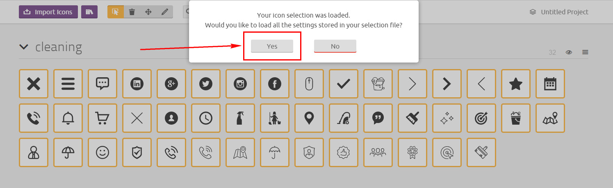

ProClena HTML5 Website Template
Premium HTML 5 website
- Created: December 2018
- By: websmirno - Envato author Profile
Thank you for purchasing our theme. If you have any questions that are beyond the scope of this help file, please feel free to email us websmirno@gmail.com. Thank you very much!
ProClena HTML5 Website Template is Html5 + CSS3 Website template and works fine in all major browsers and IE from version 10. It's powered by jQuery and you'll find nice and discreet interactivity. The code is clearly written and you will find comments for each considerable parts.
Lets take a closer look at the structure of Html, Css, JavaScript.
Folder Structure
When you unpack the archive from ThemeForest.net you'll get the folder containing 3 folders.
Here they are, sorted alphabetically:
- Documentation - Documentation
- HTML - Main folder for template
- PSD - Design source files
HTML folder structure:
-
/HTML
- /css (Template CSS)
- /font (Font Iconmoon)
- /images (All Images)
-
- // Default Skin Images
- /blog (Blog Images)
- /slider (Sliders Images)
- /gallery (Gallery Images)
- /product (Product Images)
- /content (Other Page Content Images)
- /lightbox (Lightbox plugin Images)
- /js (JS files)
- /js/plugins (JS external plugins)
- /forms (PHP form initialization)
- /less (LESS files)
CONTENT
The content is divided on pages listed below:
- index.html - Home page
- about.html - About Us page
- testimonials.html - Testimonials page
- faq.html - FAQ page
- services.html - All services page
- service-page-1...9.html - One service page
- contact.html - Contact Form page
- order-form.html - Order Form page
- shop.html, product.html - Shop page
- blog.html, blog-single.html, blog-card.html - Blog pages
HTML Structure
The body part of the Html file is divided in three main sections: header (2 variants), content and footer (2 variants).
HEADER
Header HTML structure (variant 2):
Navigation
Default menu HTML structure:
Navigation menu in resolution more than 768px looks like horizontal navbar:
And navigation menu is collapsed for smaller viewports:
Each menu link is provided in two variants: simple and multilevel
Simple menu link
Multilevel menu link HTML structure:
Slider
Main Slider HTML structure:
Each sliders item has individual style of the animation: the transition style (data-animation) and the animation delay (data-animation-delay).
You can use any the animation transition type from the site https://daneden.github.io/animate.css/.
Content
Content HTML structure:
....Block Tilte
Block ContentBlock Tilte
Block Content
You can add any number of blocks in the content. Each block can be modified using a special class:
| Modificator | Description |
|---|---|
| .bottom-null | set margin-bottom as 0 |
| .inset-20, .inset-35, inset-50, inset-70, inset-85 | set inset padding 20px...85px |
| .fullwidth | fullwidth block |
| .fullwidth-bg | fullwidth background of the block, but the block is boxed
|
| .bg-gradient, .bg-gradient-1 | set gradient background |
| .block-bg-grey | set grey background |
| [data-bg] = 'url...' | set image background |
FOOTER
Footer toggle HTML structure (variant 2):
Grid:
Based on Bootstrap, a sleek, intuitive, and powerful front-end framework.
Bootstrap makes use of certain HTML elements and CSS properties that require the use of the HTML5 doctype. Include it at the beginning of all your projects.
<!DOCTYPE html>
<html lang="en">
...
</html>
The default Bootstrap grid system utilizes 12 columns.
For a simple two column layout, create a.rowand add the appropriate number of.col-lg-*columns. As this is a 12-column grid, each.col-lg-*spans a number of those 12 columns, and should always add up to 12 for each row (or the number of columns in the parent).
<div class="row"> <div class="col-lg-4">...</div> <div class="col-lg-8">...</div> </div>
Given this example, we have .col-lg-4 and .col-lg-8, making for 12 total columns and a complete row.
Move columns to the right using.col-lg-offset-*classes. Each class increases the left margin of a column by a whole column. For example,.col-lg-offset-4moves.col-lg-4over four columns.
<div class="row">
<div class="col-lg-4">...</div>
<div class="col-lg-4 col-lg-offset-2">...</div>
</div>
If you need more information, please visit this site: http://getbootstrap.com/css/#grid
CSS Files
Theme css files is located at css folder.
- custom.css - Theme main CSS file
- plugins/*.css - Theme plugins CSS file
LESS Files
All LESS files are located at less folder. You can change them and compile new CSS files.
JavaScript
Custom JS file is located at js folder. All external JS plugins are located at js/plugins folder.
If you need more information about external plugins, please visit plugins official sites.
Icons Font
Pool Service HTML Template uses simply and flexible icon library IcoMoon.
You can see all demo icons in file font/icons/demo.html.
Use the icon class on "display:inline" elements:
...
<i class="icon icon-bell"></i>
...
or
...
<span class="icon icon-bell"></span>
...
How to Add the New Icon(s)
For adding the new icon (or icons) to the library follow the instruction, provided below:
1. Go to IcoMoon - Free -> Click Import Icons -> Upload there font/icons/selection.json -> Select 'Yes' in modal window:

All default icons will be imported!
2. Then search and select the new icon(s) and generate your custom font
3. Download the new Icons Set, unzip the archive and copy all files to 'font/icons/' folder of your project
4. Find the new icon in demo.html and use it in your html code.
For example like this:
Fonts
To change the custom font, please change these line in HEAD section of the page:To change fonts, go to http://www.google.com/webfonts, choose new fonts and use the generated code.
Contact Form
You can use default pattern for contact form in contact.html and order form in order-form.html. The HTML form validation script (js/forms.js) makes sure the data sent through the form is accurate and well formatted. For change the email recipient for those form change the address listed in form/process-contact.php and in form/process-order.php:
$to = "youremail here";
To using reCAPTCHA, you need to sign up for an API key pair for your site (read more here https://codelabs.developers.google.com/codelabs/reCAPTCHA/index.html#0). The key pair consists of a site key and secret key. The site key is used to invoke reCAPTCHA service on your site or mobile application. When you did get the key, find reCaptcha HTML code and paste your site key:
PSD Files
Design source files located at PSD folder.
Sources and Credits
We have used the following files as listed.
- jQuery - JavaScript Library
- Bootstrap - Bootstrap by Twitter
- Slick - jQuery carousel plugin
- Isotope - jQuery plugin filter & sort plugin
- Images Loaded - jQuery plugin for detect when images are loaded
- jQuery Validation Plugin
- jQuery Form Plugin
- Waypoint - jQuery 'inview' event plugin
- Magnific Popup - jQuery popup plugin
- CSS Animation Library
- jQuery LightBox Plugin
- jQuery Scroll Ease
- jQuery Bootstrap Datetimepicker
- jQuery DotDotDot Plugin
- jQuery NoUISlider Plugin
- jQuery elevateZoom Plugin
Once again, thank you for purchasing this Theme. As mentioned at the beginning of this documentation, we would be glad to help you if you have any questions related to this Theme. For more general question related to this Theme on ThemeForest, you might consider visiting the forums and asking your question in the "Item Discussion" section.
If you are satisfied with ProClena HTML5 Website Template please go to your downloads section on ThemeForest.net and rate ProClena Website Template HTML with 5 stars. Otherwise, send an Email and I will try to find nice and easy solution for you :)
Hope that you will enjoy in ProClena HTML5 Website Template as much as I've enjoyed designing this template.
Kind Regards,
WebSmirno